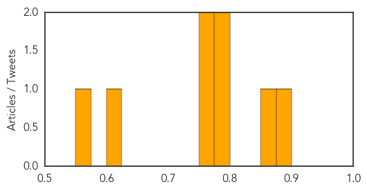

Meningitis
30-Day Web Trend
4 alerts, 1 warnings

30-Day Twitter Trend
0 alerts, 0 warnings
Article Locations

Article Confidences
Top Articles:
- 0.887
- Meningitis survivor urges for wider use of lifesaving vaccine;
- 0.869
- Meningitis Angels Fear More Outbreaks with only Permissive Men B Recommendations
- 0.792
- CDC panel votes against universal recommendation for meningitis B vaccine
- 0.776
- Significant drop in pneumococcal disease rates
- 0.774
- US expands recommended use of meningitis B vaccines
- 0.763
- CDC Says Doctors Should Prescribe New Meningitis B Vaccines On Case To Case Basis
- 0.606
- CDC panel disappoints Pfizer, GSK with limited backing for meningitis B shots
- 0.572
- Kenya Researchers Delighted by Pneumonia Vaccine's Success
Top Tweets:
-
No tweets found for Jun 25, 2015
Chikungunya
30-Day Web Trend
0 alerts, 0 warnings

30-Day Twitter Trend
0 alerts, 0 warnings

Article Locations

Article Confidences

Top Articles:
Top Tweets:
-
No tweets found for Jun 25, 2015